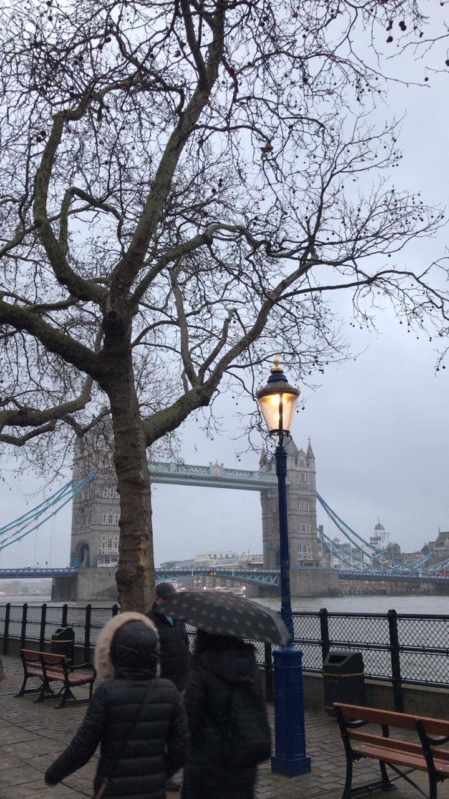

Os melhores pontos turísticos que eu pude conhecer e que você não pode perder quando visitar a cidade.
O Museu Madame Tussauds é um famoso museu que expõe as figuras de personagens famosos feitas em cera. Sua qualidade e a inovação o converteram no museu de cera mais famoso do mundo. A sede principal do museu está localizada em Londres.
Localização: Marylebone Road, na esquina com Allsop Place.
A London Eye é uma roda gigante de 135 metros de altura situada na margem sul do Tâmisa, bem em frente ao Big Ben e ao prédio do Parlamento Britânico. As 32 cápsulas, que representam os 32 distritos de Londres, têm capacidade para 25 pessoas cada e fazem uma volta completa em cerca de 30 minutos.
Localização: Riverside Building, County Hall, London SE1 7PB, Reino Unido.
A Tower Bridge (Ponte de Londres) é um dos símbolos mais destacados da capital inglesa. Essa chamativa ponte levadiça, construída em estilo vitoriano, está situada junto à Torre de Londres. A visita à exposição da Tower Bridge mostra como funcionava o sistema de elevação da ponte desde a sua construção até 1976, através de uma máquina de vapor, e sua posterior substituição por um sistema elétrico.
Localização: Ao lado da torre de Londres.
Conheça um pouco da cultura e tradições dos britanicos.

O café da manhã britanico é extremamente típico na Inglaterra e bem diferente dos nossos costumes brasileiros. Ele é composto por ovo duplo, bacon e salsichas, acompanhado de feijão cozido, cogumelos, tomate e pão frito. Se você não conseguir comer este prato logo pela manhã, existem vários espaços que o servem todo o dia. Quando eu visitei Londres não consegui experimentá-lo logo pela manhã, mas tive a oportunidade de comer no jantar e particularmente o sabor me surpreendeu, é uma mistura bem diferente mas realmente é gostoso!
O Peixe e fritas é um prato típico dos britanicos. Ele consiste em peixe frito envolvido num polme, acompanhado por batatas fritas. Inicialmente era vendido embrulhado em folhas de jornal, como ainda acontece em algumas regiões do país. Existem variações regionais no Reino Unido, no que diz respeito à preparação do peixe antes de o envolver no polme. Algumas lojas, em especial no sul da Inglaterra, deixam a pele em ambos os lados do peixe, enquanto outros, sobretudo no norte da Inglaterra, Escócia e Irlanda do Norte, fritam filetes sem pele.

O amor dos britânicos por chá é muito conhecido. De fato, eles bebem cerca de 60 biliões de chávenas de chá por ano! Pausas para chá são comuns durante o dia no Reino Unido e, se há alguma crise, não hesitam em pôr a chaleira ao lume. Quando os ponteiros ingleses marcam 17h, é hora de parar o que se está fazendo para apreciar uma bela xícara de chá e um biscoito ou croissant. Essa tradição existe no país desde 1662, mas começou a ser praticada pelo povo a partir do século XIX.
Conheça melhor como os transportes de Londres funcionam antes de visitar a cidade.
Na minha opinião, o metrô é a maneira mais eficiente de se locomover em Londres. Ao todo, 11 linhas circulam na cidade de segunda a sábado, das 5h à 0h30, e aos domingos, das 7h30 às 23h30. São 9 zonas no total, sendo as zonas 1 e 2 as mais turísticas. Mapas do metrô de Londres estão disponíveis nas próprias estações,em centros de informação turística ou na recepção da maioria dos hotéis da cidade. A tarifa individual (adulto) para viagens na zona 1 custa £4.30.
Os ônibus geralmente começam a circular por volta das 5h até à 0h30, porém as rotas principais também oferecem ônibus noturnos (da 0h às 5h ou 24 horas por dia). Determinados pontos turísticos da cidade são facilmente acessados por esse meio de transporte. Além disso, nada mais divertido do que uma voltinha em um dos famosos ônibus vermelhos de dois andares.
Adquirir um Oyster é a forma mais fácil e barata de se locomover em Londres, não só de metrô, mas também em ônibus e trens. Funciona da seguinte forma: toda vez que o cartão é utilizado, o valor do trecho em questão é debitado automaticamente. É possível recarregá-lo nas máquinas existentes nas estações da cidade. O valor das passagens variam de acordo com quantas zonas você irá andar, no meu caso, eu paguei cerca de £50 por semana, pois andava da zona 1 até a 4. É bom lembrar que o Oyster custa £5 (montante que é reembolsado no ato da devolução do cartão) e pode ser adquirido nas estações (máquinas e guichês) e também em bancas de jornais, mercados e outros pontos da cidade.
A maior preocupação dos brasileiros na hora de embarcar para Londres é o clima. Confira o que você precisa saber sobre a temperatura na cidade.
Eu visitei londres em Janeiro, no inverno. As temperaturas são baixas e bem diferentes do Brasil. Durante esta época a temperatura varia entre 7°C e 2°C. Um inverno um pouco rigoroso para nós, brasileiros, que estamos acostumados com temperaturas mínimas na média dos 15°C.Por isso é muito importantante levar bons agasalhos na bagagem.

@alana_spinelli
@_misolera